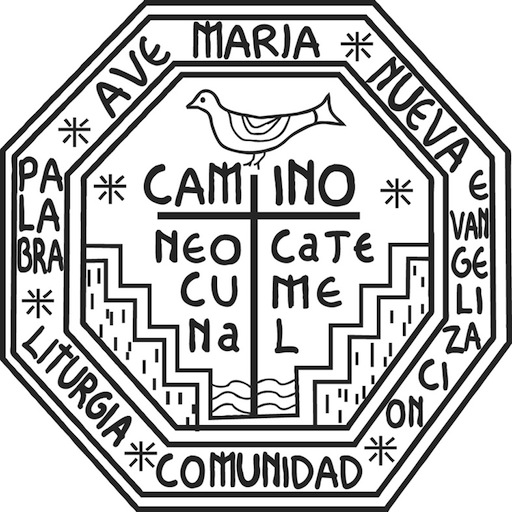

Risuscitò
Canti del Cammino Neocatecumenale
👋 Ciao, in questo sito potrai suonare, ascoltare e cantare tutti i Canti del Cammino Neocatecumenale.
Troverai gli accordi, le tracce audio e gli spartiti dei canti del Cammino Neocatecumenale
Alcune canzoni parlano di preghiera. Altri riguardano la celebrazione dell'Eucaristia. Molti riguardano momenti in cui le persone arrivano a conoscere meglio Gesù nella loro vita. E tutti riflettono un'esperienza costantemente rinnovata da nuovi incontri con Cristo nella preghiera e nella vita comunitaria.
Vai alla pagina dei Canti